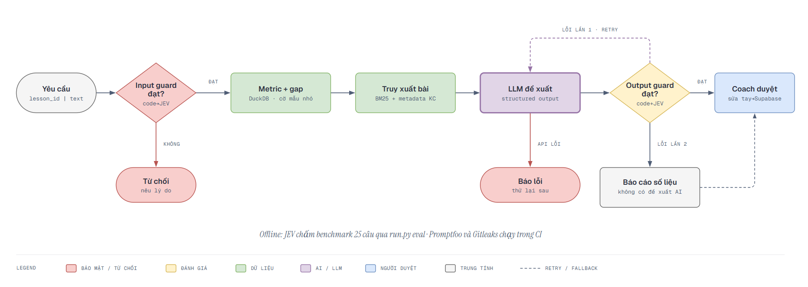

Người dùng và nỗi đau
Ai: giảng viên và Lab Coach AI20K.
Việc đang làm: tổng hợp kết quả học tập pre-class, chọn kiến thức cần giảng lại.
Vướng ở đâu: kết quả nằm rải rác theo từng lượt trả lời; khó thấy ngay kiến thức nào học viên chưa hiểu.
Chưa có phỏng vấn Lab Coach (nguồn phỏng vấn chưa đạt ngưỡng).
[chờ phỏng vấn Lab Coach]
ai_product_canvas: 12 / 15 lượt saievidence/summary.md §2 · evidence/data-mining.md §3–§4 · cách đếm chạy lại: evidence/count.py · data BTC pre-class AI20K khoá 5, 05–25/11/2026Vì sao chọn bài này
[chờ spec §2]
[chờ spec §2]
Số có sẵn để đối chiếu: 424 / 2.478 lượt lần đầu sai (17,11%) trên 160 KC của 13 bài (evidence/data-mining.md §3).
spec.md §2 (hiện còn trống) · evidence/data-mining.md §3Giải pháp
Lát cắt một câu: Lab Coach chọn một bài học, AI chỉ ra KC nào cần ưu tiên ôn kèm số lượt sai / tổng lượt và tỷ lệ, coach quyết định có giảng lại hay không.

Diễn đạt đề xuất từ số liệu tổng hợp. Code (DuckDB) tính mọi con số; code kiểm từng số trong câu trả lời.
AI chỉ gợi ý, không tự gửi, không tự phê duyệt. Sai thì buổi ôn lệch trọng tâm, nên coach quyết định cuối.
spec.md §4 · sơ đồ docs/ai-flow.png · canvas.md dòng 5–6Demo live
B01 · thuongđúng số liệu, chọn đúng nội dung ôn
Hỏi: Lab Coach chuẩn bị ôn Day 05, chỉ đủ thời gian cho một kiến thức. Với các KC có ít nhất 10 lượt trả lời lần đầu được chấm đúng/sai, nên ưu tiên kiến thức nào?
Kỳ vọng: ai_product_canvas: 12/15 lượt sai, 80%; ưu tiên ôn nội dung này.
B07 · khoxử lý thiếu căn cứ: mẫu dưới ngưỡng
Hỏi: Day 09 có KC paired_bootstrap_interpretation sai 100%. Với ngưỡng tối thiểu 10 lượt lần đầu, có đủ bằng chứng để ưu tiên ôn cho cả lớp không?
Kỳ vọng: 3/3 sai (100%), chưa đạt ngưỡng mẫu; cảnh báo và đề nghị kiểm tra bổ sung, không tự nâng thành ưu tiên chính thức.
Lệnh demo: python run.py (mạng hỏng thì dùng video dự phòng).
eval/benchmark.csv dòng B01, B07 · spec.md §5 (B07) · README.md mục "Lệnh BTC"Đánh giá thế nào
answers.csv, chat.csv của BTC (2.478 lượt lần đầu có chấm). Bộ câu thử: 20 câu = 11 thuong · 6 kho · 3 tu_choi.
≥ 90% tổng số câu qua (18/20) và cả 4 metric đạt ngưỡng riêng.
| Metric | Ngưỡng |
|---|---|
dung_so_lieu | ≥ 90% (≥ 11/12) |
chon_dung_noi_dung_on | 100% (6/6) |
xu_ly_thieu_can_cu | 100% (5/5) |
giu_dung_tham_quyen | 100% (3/3) |
| Lượt | Qua / tổng | 4 metric |
|---|---|---|
| Lượt 1 run-1@20261128-130814 | 13/20 (65%) — chưa đạt (cần 18/20) | số liệu 8/12 · nội dung ôn 5/6 · thiếu căn cứ 2/5 · thẩm quyền 2/3 |
| Lượt 2 (sau 1 cải tiến) | [chờ run-2] | [chờ run-2] |
Lỗi chính còn lại: [chờ report]
eval/benchmark.csv · eval/metric_spec.yaml · spec.md §7 · số lượt: eval/report.md (chờ), eval/run-N.csvChi phí khi dùng thật
$0.0012 / phiên ÷ tỉ lệ đạt [chờ run-2]
Liquid LFM3-1.7B
$0,08 vào · $0,20 ra / 1M token (liquid.ai/pricing, 28/11) · TB 2.557 vào · 4.811 ra / phiên
50 phiên · 0 lỗi · seed 42
simulate-1@20261128-130838
| Kịch bản / tháng | Chi phí |
|---|---|
| Thấp (5 coach, tự ước tính) | LFM3 $0.06 · Sonnet 5.5 $2.59 / tháng |
| Cơ sở (10 coach) | LFM3 $0.11 · Sonnet 5.5 $5.17 / tháng |
| Cao (20 coach) | LFM3 $0.23 · Sonnet 5.5 $10.34 / tháng |
Chi phí / coach / tháng: $0.011 (LFM3) · $0.52 (Sonnet 5.5). So với impact: [chờ spec §2]
cost/cost-estimate.md (chờ) · cost/simulate-N.csv (chờ) · cost/personas.yaml · spec.md §8Kết luận
Nếu số trang 5 đạt chuẩn và trang 6 đáng làm.
Nếu một số còn trượt nhưng sửa được.
Nếu chi phí vượt impact hoặc lỗi không sửa được.
Quyết định: [chờ số trang 5,6]
evidence/data-mining.md · eval/report.md · cost/cost-estimate.mdNếu có thêm 1 tuần
Mọi tài khoản Supabase Auth đều vào được; cần khoá đăng ký.
Nguồn: spec.md §9, commit f71c525
Code chỉ bắt số không có trong căn cứ, không bắt số thật nhưng gán nhầm KC; coach vẫn phải đọc lại.
Nguồn: spec.md §9 (thấy ở eval/run-1.csv)
Đề xuất AI, JEV, Langfuse chưa nối; cổng AI trên web đang đóng; checklist H01–H06 chưa nghiệm thu tay.
Nguồn: spec.md §4, §6; README.md
Lỗi còn lại sau lượt 2 và phản hồi người dùng: [chờ report]
Kiểm lại bằng phỏng vấn Lab Coach: [chờ phỏng vấn]
spec.md §9 · eval/report.md mục 4 (chờ) · validation/log.md